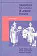
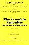
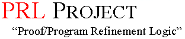
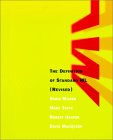

PLT
Program by Design
NU PLT
NU PRL
Books
HtDP
HtDP/2e
On HtDP
HtDC
Sem. Eng.
Research
Publications
Presentations
Teaching
Programming
Thoughts
Coordinates
Miscellaneous
Resources
Quotes
Family
Home
Resources
Strunk and White
The Elements of Style
Dorai Sitaram
Teach Yourself Scheme in Fixnum Days

Abelson and Sussman, with Sussman
Structure and Interpretation of Computer Programs

Barendregt
The Lambda Calculus

Constable, et alii
Implementing Mathematics with the Nuprl Proof Development System

Robert Harper
Programming in Standard ML (PDF)
last updated on Sun Jan 11 20:34:01 EST 2015
generated with
Racket